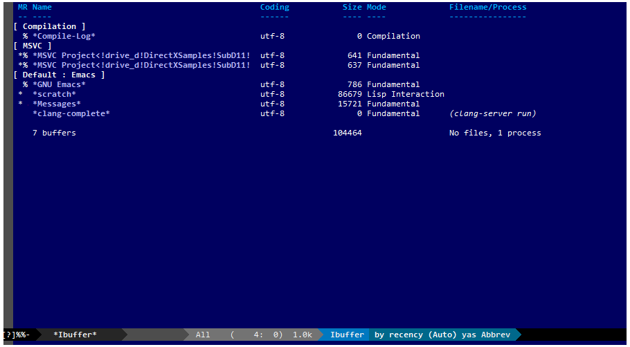
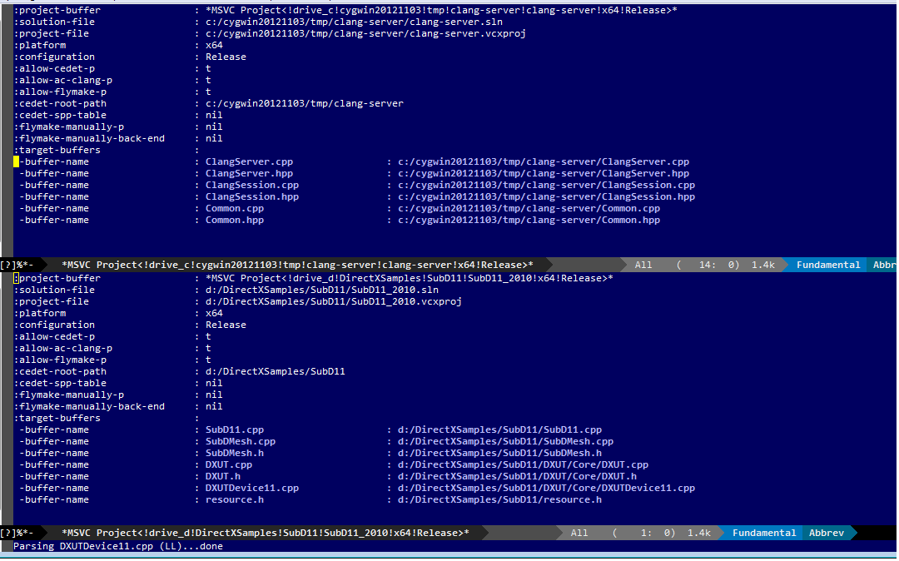
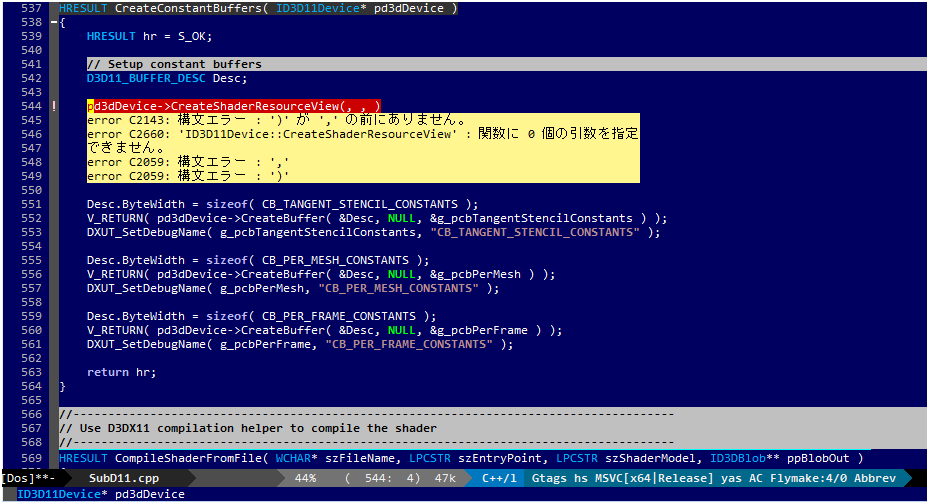
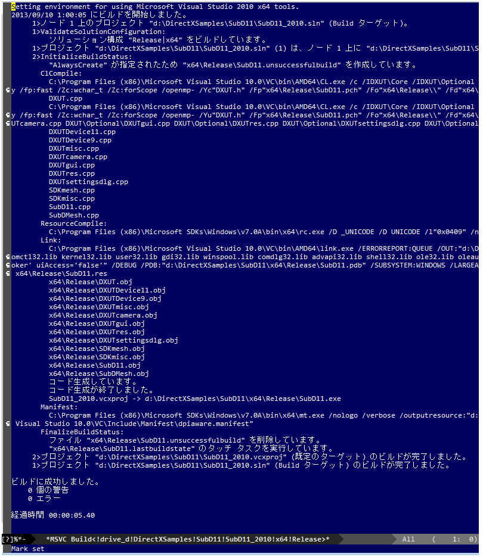

Microsoft Visual C/C++ Mode User Manual
1 提供される機能
Visual Studio プロジェクトファイルをパースすることにより、
以下の機能が利用可能になります。
※機能を利用するためにVisual Studioを起動しておく必要はありません。インストールされていればOK。
1.1 プロジェクトの管理
アクティブ化したプロジェクトに属するソースファイルがオープンされると管理バッファに自動登録されます。
また、該当ソースファイルバッファは自動的に msvc-mode が on になります。
プロジェクトを非アクティブ化すると、所属する全てのソースコードバッファの msvc-mode は off になります
プロジェクト毎に管理バッファが作成される

管理バッファ内

1.2 バージョンの異なるVisual Studio共存と利用
Visual Studio 2008/2010/2012/2013 などバージョンの異なるVisual Studioが複数インストールされている場合でも
msvcで扱うソリューション・プロジェクト毎に使用するVisual Studioのバージョンを指定可能。
これにより特定プロジェクトのみ古いバージョンのVisual Studioが利用可能になります。
1.3 IntelliSenseライクな補完機能
auto-completeとlibclangを用いてIntelliSenseライクな補完機能を提供します。
プロジェクトのCFLAGSとincludeに基いて補完を行います。
※libclangを利用せず ac-source-semantic を情報源とする補完も可能です。

1.4 flymakeによるシンタックスチェック
flymakeでプロジェクトのCFLAGSとソースコードに基いてシンタックスチェックを行います。
flymakeのバックエンドはMSBuildです。

1.5 定義/宣言へのジャンプ＆リターン
プロジェクト管理下にあるバッファではac-clangの機能を使って
クラス/メソッド/関数/enumなどが定義/宣言されているソースファイルへジャンプすることが出来ます。
GTAGSなどのタグジャンプ機能を使った事があればなじみのある機能だと思います。
1.6 includeファイルへのジャンプ＆リターン
プロジェクト管理下にあるバッファではCEDETの機能を使ってinclude記述されているファイルへジャンプすることが出来ます。
また、特定操作によりジャンプ元へ戻る事も可能です。
ジャンプ履歴はスタックされ戻る場合はポップされるので、複数回のジャンプが可能です。
タグファイル系との差は事前にタグファイルを生成しておく必要がなくオンザフライでジャンプできるのが利点です。
1.7 プロジェクトorソリューションのビルド
Emacs上でアクティブ化したプロジェクトに対してビルドを実行できます。
ビルドログはバッファに表示されます。

1.8 プロジェクトorソリューションからVisual Studioを起動
Emacs上でアクティブ化したプロジェクトをVisual Studioを起動してオープンします。
既に同一のプロジェクトがオープンされていても、再度Visual Studioを起動します。
※Visual Studioのプロセスチェック等は行っていません。powershell経由でできないかテスト中。
2 必須環境
- GNU Emacs 24.1以上
-
24.1以降でのみ動作保証
- Cygwin 32bit(or MSYS)
-
bashが必要
- Microsoft Windows 32bit/64bit
-
- Microsoft Visual Studio Professional 2010/2012/2013
-
CL.exe/MSBuild.exe 等を使います
3 必須パッケージ
Emacsで標準組み込み済みorインストールが必要なパッケージ
- CEDET(built-in)
- flymake(built-in)
- auto-complete
- yasnippet
- ac-clang
4 対応範囲
- Emacs
-
CEDETが標準built-inになったバージョン以降で動作
Emacs はgnupack emacs onlyでテスト
http://sourceforge.jp/projects/gnupack/releases/?package\_id=10839
- Cygwin(MSYS)
-
$ uname -r
1.7.20(0.266/5/3)
Cygwin 64bitは未テスト
MSYSでも動作するがCygwin推奨
- Microsoft Windows 32bit/64bit
-
- XP
-
え？
- Vista
-
動くんじゃないかな・・？
- 7
-
Professional 64 bit でのみ動作テスト
- 8 & 8.1
-
Professional 64 bit でのみ動作テスト
cygwin動作に難アリ。
私の環境ではmakeやその他ツールが実行するたびにcoredumpしまくっていたので動作状況が芳しくありません。
msvcはbashしか使わないので動作に問題はないでしょうが、
grepなど他のツールを使ったりするでしょうから、8ではcygwinがまともに動く方のみ使用するとよいでしょう。
- Microsoft Visual Studio Professional 2010/2012/2013
-
2010/2012/2013 64 bit でのみ動作テスト
- SDK
-
下記SDKのサンプルプロジェクトでテスト。
対象SDKのAPIがac-clangにより補完されることを確認。
- Windows SDK 7.0A/7.1
-
Visual Studio 2008のプロジェクトは2010に変換してテスト
- Direct X SDK(June 2010)
-
いくつかのサンプルでビルドテスト
- STL,std::tr1
-
テンプレートの展開などをテスト
boostは未テスト
5 制限事項
- ソリューション・プロジェクトの配置場所
空白を含んだパス上にプロジェクトファイル群が配置されている場合正常に補完が行えません。
libclangのparserの仕様orバグだと思います・・・。
NG d:/user projects/my proj/test.sln NG d:/user projects/my proj/test.vcxproj OK d:/user_projects/my_proj/test.sln OK d:/user_projects/my_proj/test.vcxproj
など
プロジェクト名は空白を許容します。
OK d:/user_projects/my_proj/my proj.sln OK d:/user_projects/my_proj/my proj.vcxproj
includeディレクトリが空白を含んでいるのは問題ありません。
OK C:/Program Files (x86)/Microsoft SDKs/Windows/v7.0A/include OK C:/Program Files (x86)/Microsoft DirectX SDK (June 2010)/Include
など
- プリコンパイル済みヘッダ(PCH)は使用不可
Visual Studio のPCHは使用できません。
PCHを利用するようにプロジェクトで設定されていてもMSVCでは無視されます。
6 既知の不具合
6.1 補完対象が clang-complete に出力されているのに補完メニューが表示されない
CEDET semantic-mode が影響している場合があります。
(setq semantic-idle-scheduler-idle-time TIME)
TIMEの時間を多めにするか semantic-mode を off にしてテストしてみてください。
semantic-mode の idle-parsing などが影響？
同様に idle-parsing が異常終了してbacktraceなどが出力されているような場合でも正常動作しないケースがある。
semantic のバッファパース処理で save-excursion されていないポイント操作などがあるのではと推測。
6.2 特定ファイルがロックされセーブできなくなる
編集したヘッダファイルをセーブしようとすると "basic-save-buffer-2: Opening output file: invalid argument `HEADER-FILE-NAME`" となりセーブできない。
必ず発生するわけではなく特定の条件を満たしたファイルサイズが16kBを越えるヘッダファイルで発生する。
16kB以下のヘッダファイルではまったく発生しない。
libclang の TranslationUnit(以下TU) の問題。
libclang の TU がinclude対象のファイルをロックしている。
※プロセスがロックしているファイル一覧には出てこない。
ac-clang側で暫定対処パッチを施してあるので多少は緩和されているが完全に回避はできない。
発生した場合はマニュアル対処する以外ない。
TUの問題なので、おそらくオリジナル版も同様の問題を持っているとおもわれる。
6.2.1 対処方法
include対象なので大抵は foo.cpp/foo.hpp という構成だとおもわれます。
foo.hpp(modified)がセーブできない場合、大抵foo.cppが(modified)になっているのでfoo.cppをセーブしましょう。
これによりfoo.hppはセーブ可能になるはずです。
これでもセーブできない場合は、foo.cpp以外のソースでfoo.hppをインクルードしており(modified)になっているバッファがあるはずなので
それもセーブしましょう。
また、定義へのジャンプ機能で該当ソースがアクティブ化されている場合は、未編集バッファであってもアクティブ化されています。
該当バッファを削除してみるか、そのバッファへスイッチして (ac-clang:deactivate) を実行してください。
これ以外でも16kBを越えるヘッダを編集しようとした際に、そのファイルのcppはオープンしていないのにセーブできない場合、
該当ヘッダファイルを何処か遠いモジュールでインクルードしている場合なども同様の症状になります。
ライブラリモジュールやフレームワークなどを開発している場合は発生しやすいかもしれません。
※ライブラリ・フレームワークはアプリ側からよくincludeされるため。
6.2.2 原因（実装上の問題説明、解決案求む）
foo.cpp(modified)のとき foo.cppのセッションで
TUが foo.cpp パース後もincludeされているファイルのロックを保持しつづけている。
この状態で foo.hpp を編集してセーブしようとするとロックでエラーになる。
ロックを解除するには、 foo.cpp のTUをリリースする。
なので foo.cpp セーブ時にセッションは保持した状態で TU だけをリリースして、
foo.cpp が再び modified になったときに TU を生成するように修正。
これにより foo.cpp セーブ後であればincludeロックでが全解除されるので foo.hpp がセーブ可能になる。
当然 foo.cpp 以外に foo.hpp をinclude しているソースでかつ、編集中のバッファがある場合は、
それら全てを保存しないとロックでは解除されない。
このロックはopen関数によるロックはではなくWindowsAPIのCreateFileMappingによるロックである。
libclang FileManagerは16kB以上のファイルをメモリマップドファイルとしてアロケーションする。
TUがリリースされるとUnmapViewOfFileによりメモリマップドファイルがリリースされるようになりファイルに対して書き込み可能になる。
7 インストール
7.1 Emacsの起動設定
GNU Emacs を cygwin(or msys)から起動できるようにします。
.bashrc あたりに以下を記述しておくとよいでしょう。
Emacsが配置されているパスを
c:/emacs/32/emacs-24.3-20130503
とします
- Cygwin
-
alias emacs32-243-1='/cygdrive/c/emacs/32/emacs-24.3-20130503/bin/emacs.exe --debug-init' alias emacs='emacs32-243-1'
- MSYS
-
alias emacs32-243-1='c:/emacs/32/emacs-24.3-20130503/bin/emacs.exe --debug-init' alias emacs='emacs32-243-1'
7.2 Emacsパッケージの設定
以下のパッケージの設定が必要です。
設定が実行される順番も下記の順番が望ましいです。
- CEDET(built-in)
-
- flymake(built-in)
-
- auto-complete
-
M-x list-packages で入手
- yasnippet
-
M-x list-packages で入手
- ac-clang
-
https://github.com/yaruopooner/ac-clang
emacs-clang-complete-asyncからforkして独自拡張したもの。
https://github.com/Golevka/emacs-clang-complete-async
オリジナルは list-packages で入手可能ですがmsvcでは動作しません。
emacs-clang-complete-asyncではバッファ毎にプロセスを起動する仕様や
libclang.aがVisual Studio向けでなかったので独自拡張になりました。
詳細はac-clang側ドキュメントに記載。
必要最低限の設定が行えるサンプルファイルを添付しているので、
パッケージに関する自前設定がない人は添付ファイルをロードするなりコピペするなりしてください。
すでに上記パッケージを利用しており自前の設定がある場合は、設定が競合していないかチェックをお勧めします。
msvc/.minimal-config-sample/init.el を参照してください。
init.el は ~/.emacs.d/ 以下に配置した場合に動作するよう記述されています。
必要に応じてコードを抜き出してください。
7.3 初期化設定
上記で説明した必須パッケージ群(CEDET/flymake/auto-complete/yasnippet/ac-clang)のロードも含めた初期設定を実行後に以下が実行される必要があります。
基本的に以下の設定を .emacs に記述するだけで問題ないです。
以下の記述はパッケージディレクトリが "~/.emacs.d" に配置された事を想定した記述なので自分の環境に合わせて修正してください。
(add-to-list 'load-path (expand-file-name "msvc/" "~/.emacs.d")) (require 'msvc) (msvc:initialize) (msvc-flags:load-db :parsing-buffer-delete-p t) (add-hook 'c-mode-common-hook 'msvc:mode-on t)
8 使用方法
8.1 プロジェクトのパースと登録1
下記パラメーターで関数を実行すると非同期実行されmsvc-dbに該当プロジェクトのデータベースが作成されます。
プロジェクト管理・補完・シンタックスチェックなどはこのデータベースを元にして実行されます。
データベース化されたプロジェクトは日付情報を参照しており、
同一プロジェクトが再パースリクエストを受けた際に、
プロジェクトが前回データベース化された日付より新しい場合のみデータベースを再構築します。
※更新要因はプロジェクトのプロパティを変更した、SVNなどversion controlツールによる更新でプロジェクトファイルが新しくなった、など。
プロジェクトがアクティブになると、該当プロジェクト名を持つバッファが作成されます。
プロジェクトバッファ名は以下のフォーマットに基きます。
MSVC Project<`db-name`>
また、該当プロジェクトに属するソースコードがオープンされていたり、アクティブ中にオープンすると自動的にmsvc-modeが適用されます。
msvc-modeが適用されたバッファはモードラインに MSVC`version`[platform|configuration] と表示されます。
以下の関数でパース＆アクティブ化を行います。
(msvc:activate-projects-after-parse &rest args)
異なるプロジェクトを複数同時にアクティブ化可能です。
個数制限は特に無いです。
同一プロジェクトでプラットフォームとコンフィグレーションが異なるプロジェクトは同時にアクティブ化できません。
この場合、最初にアクティブ化されたプロジェクトが有効になります。
※対象となるソースバッファが１つしか存在ないことが理由。
バッファ自身はどのプロジェクトで、どんな platform|configuration で動作するのかを保持しているため。
- 登録サンプル
-
(msvc:activate-projects-after-parse :solution-file "d:/DirectXSamples/SubD11/SubD11_2010.sln"
:project-file "d:/DirectXSamples/SubD11/SubD11_2010.vcxproj"
:platform "x64"
:configuration "Release"
:force-parse-p nil
:allow-cedet-p t
:allow-ac-clang-p t
:allow-flymake-p t
:cedet-root-path "d:/DirectXSamples/SubD11"
:cedet-spp-table nil
:flymake-manually-p nil
:flymake-manually-back-end nil)
8.1.1 必須パラメーター
- :solution-file or :project-file
-
いずれかが設定されていればOKです。
:solution-file のみを指定した場合
ソリューションに含まれる全てのプロジェクトがパースされ、アクティブ化されます。
以下の機能が追加されます。
アクティブ化したプロジェクトからソリューションのビルド呼び出しなどが可能になります。
ソリューションに登録されているプロジェクト数が少ない場合はこのスタイルで記述するのがよいでしょう。
:project-file のみの場合
指定したプロジェクトのみがパース・アクティブ化されます。
ソリューションに関連した機能は実行できなくなります。
:solution-file & :project-file で指定した場合
ソリューションのみを指定した場合と同じ効果を持ちますが、
ソリューションのみの場合は所属全プロジェクトがパース＆アクティブ化されるのに対し
こちらは指定したプロジェクトのみがパース＆アクティブ化されます。
ソリューションに登録されているプロジェクトが膨大な場合は、必要なプロジェクトだけをこのスタイルで記述するのがよいでしょう。
- :platform
-
パース・アクティブ化するプラットフォームを指定します。
プロジェクトファイルに存在するプラットフォームでなければなりません。
- :configuration
-
パース・アクティブ化するコンフィグを指定します。
プロジェクトファイルに存在するコンフィグでなければなりません。
8.1.2 オプションパラメーター
- :version
-
プロジェクトパース、ac-clangに渡されるCFLAGS生成、シンタックスチェック、ソリューションビルドに使用されるVisual Studioのバージョンを指定。
指定は文字列で行う。整数ではないので注意。
"2013" のように指定。
指定しない or nil場合、msvc-env:default-use-versionの値がセットされる。
msvc-env:default-use-versionは起動時に検出した最新のVisual Studioが割り当てられる。
msvc::initialize実行後にmsvc-env:default-use-versionの値を再セットすることにより標準で使用されるversionを変更可能。
- :force-parse-p
-
nil 推奨
すでにパース済みのプロジェクトであっても強制的にパースする。
主にデバッグ用途です。
- :sync-p
-
nil 推奨
同期パースします。
ですので、プロジェクトファイルが多い場合は関数から戻るまで時間がかかります。
通常使用する分にはまず使用する必要は無いと思います。
主にデバッグ用途です。
- :allow-cedet-p
-
t 推奨
CEDET機能を利用する
CEDETのプロジェクト管理に登録されsemanticが有効化されます。
nil の場合はincludeファイルへのジャンプが利用できなくなります。
- :allow-ac-clang-p
-
t 推奨
ac-clang機能を利用する
libclangによるコード補完と宣言/定義へのジャンプが可能になります。
nil の場合はジャンプは利用不可になり、補完は情報源としてsemanticを利用するようになります。
- :allow-flymake-p
-
t 推奨
flymake機能を利用する
MSBuildによるシンタックスチェックを利用します。
- :cedet-root-path
-
:allow-cedet-p t の時だけ参照される
CEDET edeプロジェクト基準ディレクトリを指定する
指定したディレクトリに*.edeファイルが生成される
大抵はプロジェクトファイルが配置されているディレクトリで問題ないです。
ただ、ソースコードの配置場所がプロジェクトファイル配置ディレクトリと同階層か子孫で無い場合は注意が必要になります。
この場合は同階層か子孫になるような共通の親ディレクトリを指定する必要があります。
- :cedet-spp-table
-
nil 推奨
:allow-cedet-p t の時だけ参照される
semanticがソースをパースする際にリプレースさせたいワードの連想テーブル
semanticが解釈できないdefineなどをリプレースするテーブルです。
semantic.cacheがうまく作成できない場合は設定が必要です。
以下記述サンプル
:cedet-spp-table '( ("ALIGN" . "") ("FORCE_INLINE" . "") ("NO_INLINE" . "") ("THREAD_LOCAL" . "") ("DLL_IMPORT" . "") ("DLL_EXPORT" . "") ("RESTRICT" . ""))詳細はCEDETマニュアル参照。
- :flymake-manually-p
-
nil 推奨
:allow-flymake-p t の時だけ参照される
flymake のシンタックスチェックを自動起動しない
マニュアルチェックのみ有効
- :flymake-manually-back-end
-
nil 推奨
:allow-flymake-p t の時だけ参照される
MSBuild 以外を使用する場合のみ指定する
現在は 'clang のみ対応
ac-clang の clang-server を利用してシンタックスチェックをする。
※この場合マニュアル操作のみ
※現在動作不良なので使用は非推奨
8.2 プロジェクトのパースと登録2
~/.emacs.d/
に
.msvc
というファイルを作成しておくと初期化時に実行されます。
msvc:activate-projects-after-parse などはこのファイルに記述しておくとよいでしょう。
8.3 アクティブプロジェクトバッファ
アクティブなプロジェクトは以下のバッファ名が与えられます。
MSVC Project<`db-name`>
バッファに入るとmsvc:activate-projects-after-parse で指定したパラメーターが確認可能です。
また、現在開いているソースコードバッファでプロジェクトに所属しているバッファが :target-buffers に表示されます。
バッファ名へカーソルを持っていきEnter入力を行うかマウスクリックを行うとバッファへジャンプ可能。
このバッファを削除すると、関連する全ソースコードバッファのmsvc-modeがoffになります。
8.4 コード補完
利用可能な場所：msvc-mode onのソースコードバッファ上
:allow-ac-clang-p tの場合補完可能になります。
- 操作
- 補完
-
キー : `::`, `.`, `->`
説明 : 補完が自動起動します。
8.5 シンタックスチェック
利用可能な場所：msvc-mode onのソースコードバッファ上
:allow-flymake-p tの場合可能になります。
buffer modified で自動起動します。
"F5"でマニュアルシンタックスチェック。
:allow-flymake-p tであれば:flymake-manually-p nilであってもオート・マニュアル併用が可能です。
エラー表示スタイルは以下の変数にシンボルをセットすることにより変更が可能です。
(setq msvc:flymake-error-display-style DISPLAY-STYLE-SYMBOL)
- DISPLAY-STYLE-SYMBOL
- 'popup
-
初期値です。
auto-completeパッケージ付属のpopup.elを使用してエラー表示をします
- 'mini-buffer
-
ミニバッファにエラー表示をします
- nil
-
msvcはエラー表示を行いません
エラー表示手法は各個人のflymake設定に依存します
- 操作
- マニュアルシンタックスチェック
-
キー : F5
説明 : マニュアルでflymakeを実行します
- エラー行へジャンプ(prev-error)
-
キー : M-[
説明 : エラー行へジャンプしてエラー内容をポップアップ表示します
- エラー行へジャンプ(next-error)
-
キー : M-]
説明 : エラー行へジャンプしてエラー内容をポップアップ表示します
8.6 定義/宣言へのジャンプ＆リターン
利用可能な場所：msvc-mode onのソースコードバッファ上
ソースコードバッファでジャンプしたいワード上にカーソルをポイントしてジャンプします。
ジャンプ履歴はスタックされており複数回ジャンプ後に最初のジャンプ元へ戻る事が可能です。
msvc-modeによるジャンプ機能はac-clangで実装されており、
あくまでC/C++かつVisual Studioプロジェクト管理化にあるファイルに限定されています。
ですので、 luaなどその他スクリプト言語も使用しており GTAGS + CTAGS を利用するような場合はそれらと併用するのがよいでしょう。
- 操作
- 定義/宣言へジャンプ
-
キー : M-.
説明 : ジャンプしたいワード上にカーソルをポイントしてキー操作をすると
定義/宣言がされているソースファイルをオープンし該当バッファの定義/宣言場所へカーソルをポイントします
- ジャンプ元へリターン
-
キー : M-,
説明 : 一つ前のジャンプ元へリターンします
この操作を繰り返す事によりジャンプ履歴をさかのぼれます
8.7 includeファイルへのジャンプ＆リターン
利用可能な場所：msvc-mode onのソースコードバッファ上
includeのライン上で"M-i" すると対象ファイルへジャンプします。
ジャンプ履歴はスタックされており複数回ジャンプ後に最初のジャンプ元へ戻る事が可能です。
※制限事項：プロジェクトで管理されていないインクルードファイルへジャンプするとM-Iで戻れません。
マニュアルで戻ってください・・。たとえば標準ライブラリ stdio.h, vectorやその他SDKのincludeなど。
またジャンプできず以下のメッセージが表示される場合は
semantic-decoration-include-visit: Point is not on an include tag
"C-c , ," という操作を行い semantic に該当バッファの reparse を行わせます。
これによりジャンプ可能になるはずです。
- 操作
- includeファイルへジャンプ
-
キー : M-i
説明 : ジャンプしたいincludeファイル上にカーソルをポイントしてキー操作をすると
includeファイルをオープンして該当バッファへジャンプします
- ジャンプ元へリターン
-
キー : M-I
説明 : 一つ前のジャンプ元へリターンします
この操作を繰り返す事によりジャンプ履歴をさかのぼれます
8.8 プロジェクト・ソリューションのビルド
利用可能な場所：アクティブなプロジェクトバッファ・msvc-mode onのソースコードバッファ上
C-f5 でプロジェクト・ソリューションのビルドが起動します。
コマンドからの呼び出しは
(msvc:mode-feature-build-solution)
コマンドのみで提供されている機能
(msvc:mode-feature-rebuild-solution)
(msvc:mode-feature-clean-solution)
- 操作
- プロジェクト・ソリューションのビルド
-
キー : C-f5
説明 : プロジェクト・ソリューションのビルドが起動します
ビルドログ報告スタイルを設定可能
以下の変数にシンボルをセットすることにより変更が可能です。(.msvcあたりで記述しておく)
(setq msvc:solution-build-report-display-timing DISPLAY-TIMING-SYMBOL)
- DISPLAY-TIMING-SYMBOL
-
ビルドログバッファのウィンドウ表示タイミングを指定
- 'before
-
ビルドを開始した時点でウィンドウを分割して表示します。
- 'after
-
ビルドが完了した時点でウィンドウを分割して表示します。
- nil
-
ログバッファは生成するがビルド完了後もフォアグラウンドにしない。
ビルドログバッファ内での表示方法を指定
(msvc:solution-build-report-realtime-display-p BOOLEAN)
- BOOLEAN
-
- t
-
ビルドログをリアルタイム表示
- nil
-
ビルド完了後に一括表示
8.9 プロジェクト・ソリューションの再パース
利用可能な場所：どこでも
msvcプロジェクトがアクティブな状態で、
Visual Studio上でプロジェクトファイルを編集したり、
バージョンコントロールによるアップデートでプロジェクトファイルが更新された場合に使用します。
現在Emacs上でアクティブになっている全てのプロジェクトを再パース・再アクティブ化します。
(msvc:reparse-active-projects)
8.10 Visual Studio の起動
利用可能な場所：アクティブなプロジェクトバッファ・msvc-mode onのソースコードバッファ上
該当バッファが属するプロジェクト・ソリューションファイルをVisual Studioで起動します。
※Windowsのファイル関連付け機能を利用しているだけなので、複数のVisual Studioがインストールされている場合は関連付け設定に従います。
- (msvc:mode-feature-launch-msvs)
-
バッファにソリューションが関連付けされていればソリューションで起動。
プロジェクトのみの場合はプロジェクトで起動。
- (msvc:mode-feature-launch-msvs-by-project)
-
プロジェクトで起動。
- (msvc:mode-feature-launch-msvs-by-solution)
-
ソリューションで起動。
8.11 テンポラリファイルの削除
ac-clang を使用していると /tmp 以下に
preamble.pch-*****
(*****)は適当なナンバーです。
という名前のファイルが生成されます。
これらは libclang の TranslationUnit が一時的なPCHファイルとして生成しています。
過去のものは使われていないで、
このテンポラリファイルが溜まってきたら削除してかまいません。